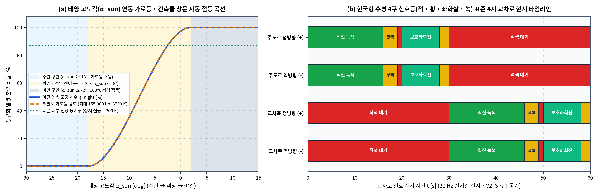
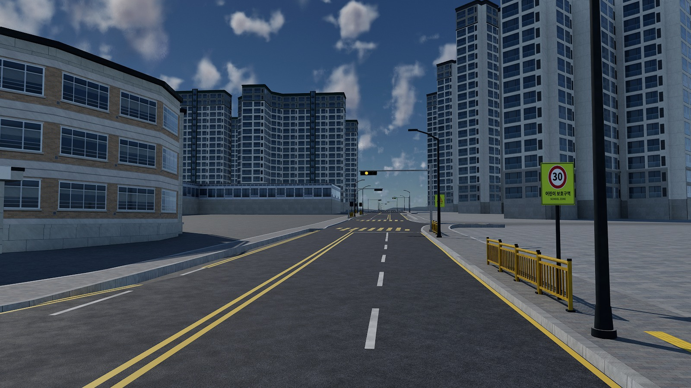
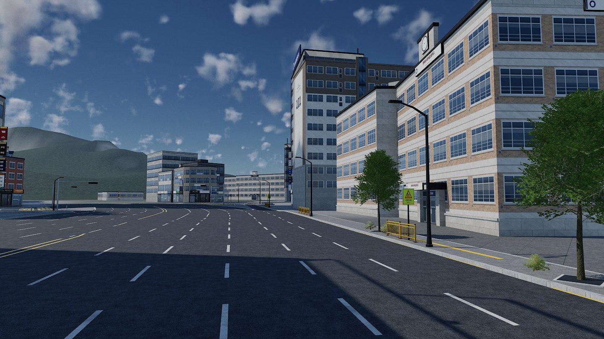
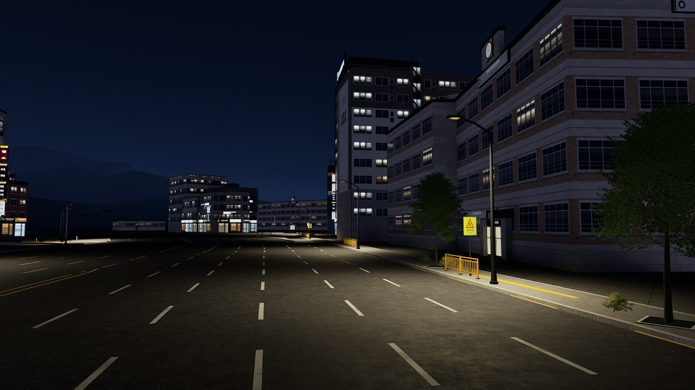
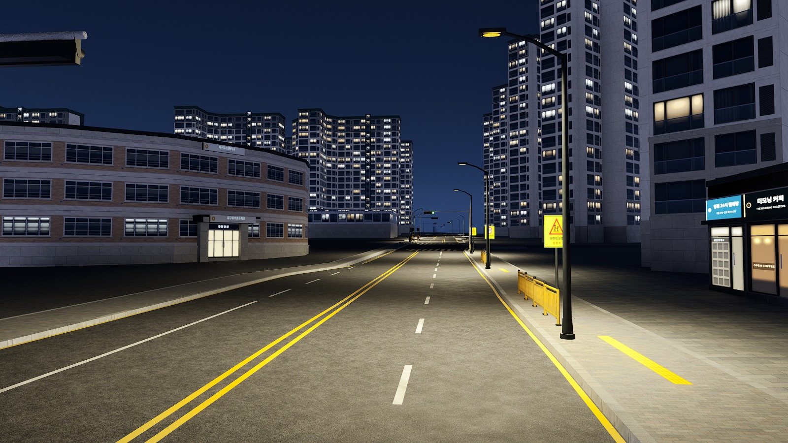
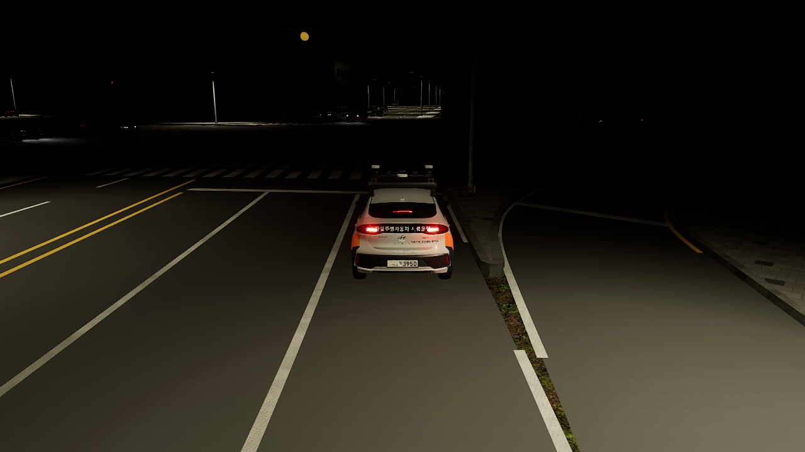
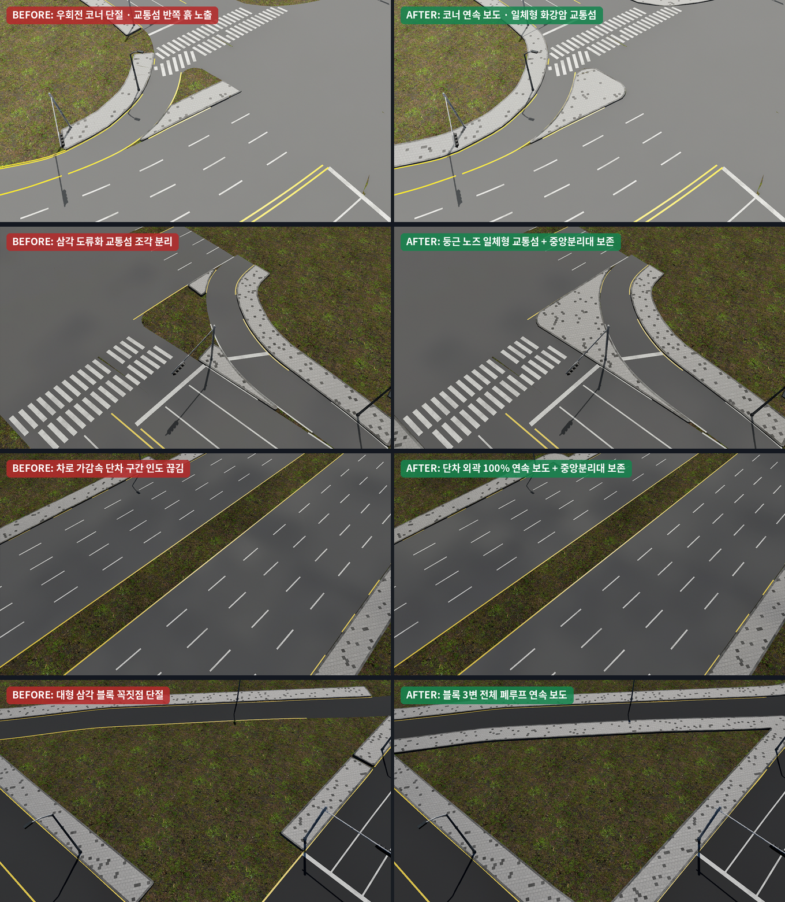

교통신호등 · 안전표지 · 가로등 및 주행시험장 특수 노면
국내 규격 4구 수평형 신호등 현시 제어, 제한속도·어린이보호구역 표지 및 안전시설 연동, 주야간 자동 점소등 가로등, 보도 연석 단차 및 주행시험장 특수 내구 노면 구성을 설명합니다.
1. 한국형 4구 수평 교통신호등 현시 구조 및 V2I 동기화
국내 도로교통법 시행규칙(별표 3) 기준의 교통신호 인지 및 법규 준수 항목을 가상환경에서 그대로 시험할 수 있도록, 해외 시뮬레이터의 기본 3구 수직형 신호등 대신 운전자 시점 좌측부터 적색 · 황색 · 좌회전 녹색 화살표 · 직진 녹색이 나란히 배치된 4구 수평형 신호등을 생성합니다.
각 교차로의 진입 방향 수와 차로 회전 속성(직진·좌회전·우회전 가능 여부)을 분석하여 표준 4지 교차로(주·부도로 분리 Ring-Barrier), T자형 3지 교차로, 일방통행 합류부의 신호 스케줄이 자동 구성되며, ① 3D 카메라 영상 내 렌즈 발광 상태, ② Tab 2 및 관제 모니터의 차로별 정지선 색상, ③ 자율주행 시스템(SUT)으로 송출되는 V2I SPaT 현시·잔여시간(초), ④ 20Hz 검증 로그의 신호 준수 판정 기준이 단일 신호 상태표로부터 동시에 갱신됩니다.

그림 1. 국내 규격 4구 수평형 교통신호등 3D 근접 렌더링 — (a) 적색 정지 현시(1구 적색), (b) 보호좌회전 현시(1구 적색 + 3구 좌회전 녹색 화살표 동시 점등), (c) 직진 녹색 진행 현시(4구 녹색), (d) 황색 주의 전환 및 박명·야간 가로등 동시 점등.
| 등화 순번 (운전자 시점 좌 → 우) | 등화 색상 · 기호 | 점등 현시 및 운영 규칙 | 2D 관제 정지선 · V2I SPaT · 연계 KPI |
|---|---|---|---|
| 1구 (최좌측) | 적색 원형 등화 (Red) | 정지 현시 및 보호좌회전 현시(직진 정지 유지) 중 점등 | 2D 지도 적색 정지선 표시 · SPaT 적색 정지 · 적색 신호 정지 준수(KPI 16) |
| 2구 (중좌측) | 황색 원형 등화 (Yellow) | 녹색 또는 좌회전 현시 종료 후 정지 전환 전 주의 구간(기본 3~4초) 점등 | 2D 지도 황색 정지선 표시 · SPaT 황색 주의 · 황색 딜레마존 판단(KPI 17) |
| 3구 (중우측) | 녹색 좌회전 화살표 (←) | 보호좌회전(적색+좌화살) 또는 직좌 동시신호(좌화살+녹색) 시 점등; 좌회전 차로가 없는 직진 전용 접근로에서는 자동 비활성화 | 2D 지도 청록 좌회전 표시 · SPaT 좌회전 진행 · 신호교차로 좌회전 통행(KPI 11) |
| 4구 (최우측) | 녹색 원형 등화 (Green) | 주도로·부도로 직진(및 비보호 우회전) 통행 허용 현시 중 점등 | 2D 지도 녹색 정지선 표시 · SPaT 녹색 진행 · 녹색 신호 불필요 정지 금지(KPI 18) |
2. 도로안전표지 · 어린이보호구역 · 연석 및 태양고도 연동 가로등
| 시설물 구분 | 설치 및 동작 방식 | 연계되는 시뮬레이션·KPI 검증 항목 |
|---|---|---|
| 4구 수평형 교통신호등 | 좌측부터 적색 · 황색 · 좌회전 화살표 · 직진 녹색 4구 수평 배열; 교차로 형태(4지 Ring-Barrier 120초 주기 · T자형 3현시 · 일방통행 2현시)에 맞춰 현시 순환 및 V2X SPaT 정보와 20Hz 동기화 | 카메라 신호등 인식 및 적색 정지(KPI 16) · 황색 판단(KPI 17) · 녹색 진행(KPI 18) · 좌회전 통행(KPI 11) 검증 |
| 도로교통표지판 & 어린이보호구역 | 제한속도(50 / 60), 횡단보도, 주정차금지 원형 표지 및 학교 인근 30 어린이보호구역 표지·노란색 방호울타리 자동 배치 | 전방 표지판 인식 및 일반도로·어린이보호구역 제한속도 준수(KPI 01 · KPI 06) 검증 |
| 보도 화강석 연석 & 교통섬 | 보도 경계를 따라 높이 +14 cm 물리 충돌 연석 생성, 횡단보도 앞 턱낮춤 경사로(+14 cm → +2 cm) 및 소형 교통섬 포장 | 라이다 연석 경계 검지, 차도 이탈 물리 충격 및 보도 침범 금지(KPI 04) 검증 |
| 외팔보 LED 가로등 | 정밀지도 지주점(C6_POSTPOINT) 우선 배치 및 미구축 구간 28~32 m 간격 보간, 3500~3700 K 하향 배광 | 야간·우천 시 노면 조도 형성 및 주간 불필요 광원 연산 제거 |
| 버스정류장 & 보행자 안전펜스 | 간선도로 정류장 쉘터·전광판 및 보도 경계 안전펜스 배치 | 정류장 정차 버스 회피 시나리오(sc13, sc15) 및 보행자 횡단 구역 구분 |

그림 2. 태양 고도각(α_sun) 연동 가로등·건물 창문 자동 조광 곡선(a) 및 한국형 수평 4구 신호등 표준 4지 교차로 Ring-Barrier 현시 타임라인(b).
태양 고도각(α_sun) 기반 가로등 자동 디밍 식
u(αsun) = clamp((18° − αsun) / 20°, 0, 1),
S(αsun) = u2(3 − 2u)
• 주간(αsun ≥ 18°): 광원 비활성화(렌더링 부하 절감) | • 박명·야간(18° → −2°): 연속 밝기 전환
• 주간(αsun ≥ 18°): 광원 비활성화(렌더링 부하 절감) | • 박명·야간(18° → −2°): 연속 밝기 전환

어린이보호구역 표지 및 횡단보도: 제한속도 30 표지판, 노란색 방호울타리, 횡단보도 턱낮춤 연석

교차로 4구 수평 신호등 및 가로경관: 정밀도로지도 정지선·차로 폭에 맞춰 외팔보 암으로 배치된 수평 4구 신호기

도심 다차로 교차로 (주간): 주간 태양광 조건에서의 신호등, 도로안전표지 및 보도 경계 펜스

도심 신호교차로 및 가로등 (야간): 태양 고도 하강에 따라 자동 점등된 가로등과 4구 수평 신호등 발광

야간 스쿨존 LED 배광: 3700K 외팔보 가로등 하향 조도와 노란색 방호울타리·횡단보도 시인성

야간 실주행 노면 조도 검증: 시험차(IONIQ Q) 제동등, LED 가로등 배광, 화강암 연석 및 NPC 전조등

그림 3. 보도 · 화강암 교통섬 · 차로 단차 연속성 4개 지점 검증 — 우회전 슬립레인 교통섬, 중앙 분리섬, 차로 폭 변화 구간 및 대형 블록 보도 경계석 정합 결과.
3. 주행시험장(KIAPI) 특수 내구·환경 시험 노면
KIAPI 권역 선택 시에는 고속주회로·도심시험로와 함께 아래 특수 노면 메쉬가 로드되어 서스펜션 동역학 응답 및 불량 노면 인지 강건성을 점검할 수 있습니다.
| 주행시험장 특수 노면 / 시설 | 노면 기하 특성 | 주요 차량 동역학 · 센서 시험 목적 |
|---|---|---|
| 벨지안로 (Belgian) | 불규칙 석재 블록 요철 노면 | 고주파 진동 환경에서의 서스펜션 감쇠 및 카메라·라이다 흔들림 영향 확인 |
| 빨래판로 (Washboard) | 일정 주기 연속 횡방향 요철 | 휠홉(Wheel-hop) 대역에서의 제동·조향 제어 안정성 확인 |
| 파형로 (Wave) | 장주기 사인파 종단 기복 | 차체 피치(Pitch)·상하 운동에 따른 전방 센서 시야각 변화 점검 |
| 차체비틀림로 (Body Twist) | 좌·우 교차 단차 노면 | 안티롤바(ARB) 강성 및 대각선 윤하중 변동 시 구동력 확인 |
| 3연속 과속방지턱 (3-Bump) | 연속 원호형 과속방지턱 | 방지턱 통과 충격 응답 및 전방 노면 장애물 오탐 여부 점검 |
| 악로 · 자갈길 · 충격로 | 파손 포장, 자갈 노면, 연석/돌출 단발 충격 | 불량 노면 지면 분할(Ground Segmentation) 및 단발 충격 후 조향 복원 확인 |
| 침수 시험로 · 분진 터널 · 게이트 | 수면 반사 수조 구간, 밀폐 터널, 진입 차단기 | 수면 반사 노이즈, 시야 제한 환경 및 차단기 앞 정지·통과 시험 |